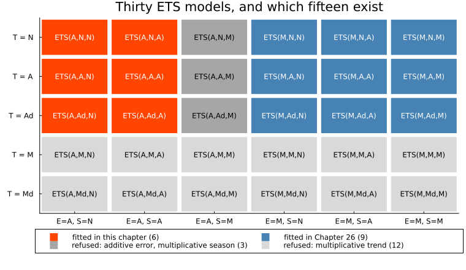
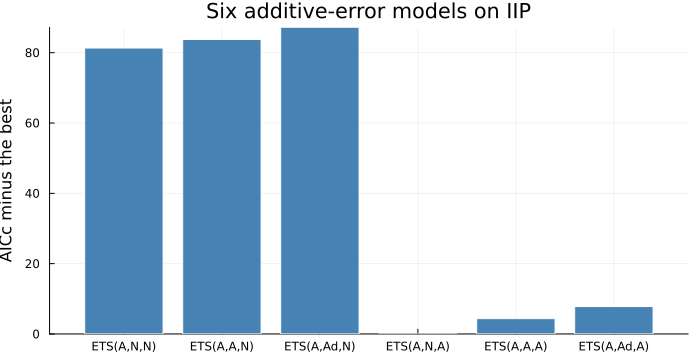
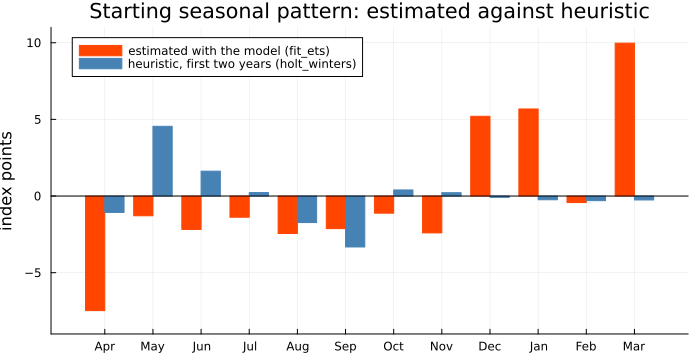
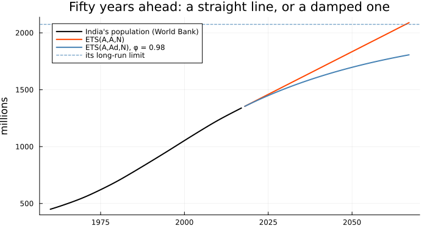
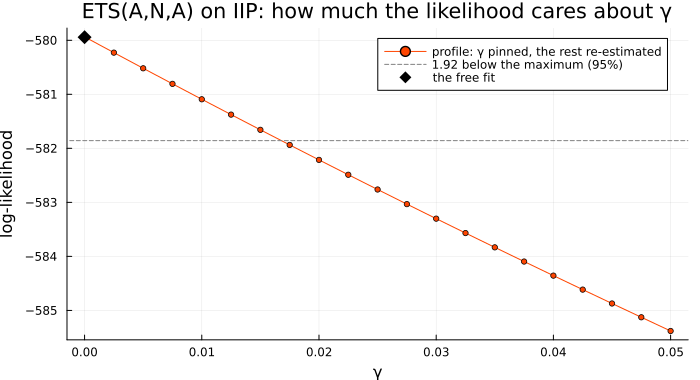
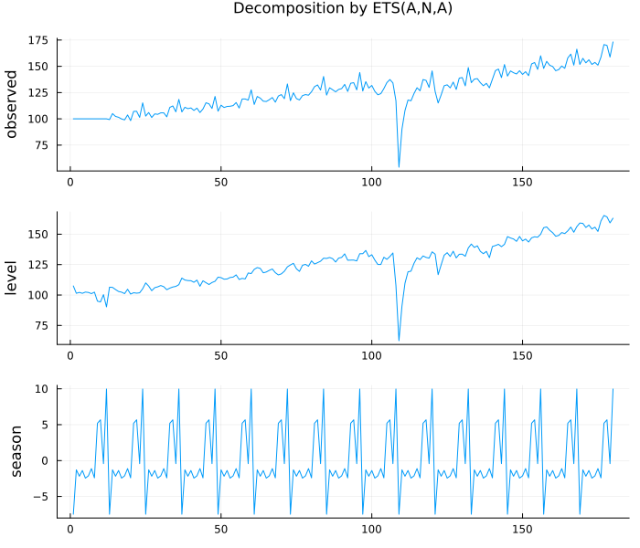
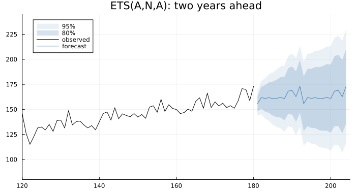

A Taxonomy of Thirty
Chapter 24 left India's Index of Industrial Production with three fitted smoothers and no way to choose between them. Holt-Winters had the lowest sum of squares, but a sum of squares always prefers the larger model. Its seasonal parameter came out at γ = 1 on the full series and γ = 0 without the flat first year, and nothing in the method could say which to believe. Is the seasonal term worth its parameters? Is the slope? How well does the data pin down γ? A likelihood answers all three routinely. The smoothing recursions do not have one yet; this chapter gives them one.
The obvious attempt: an AIC from the sum of squares
Chapter 21 chose ARIMA orders by AIC, −2 log L + 2k. With Gaussian errors and the constants dropped that is n log(SSE/n) + 2k, and the classical fits do report an SSE, so the tempting move is to compute it for each and compare:
using TSAnalytics, Plots, Statistics, Dates
iip = dataset("iip_india") # MoSPI, monthly, April 2011 to March 2026
y, n = iip.value, length(iip.value)
ses = holt_winters(y)
holt = holt_winters(y; trend = :additive)
hw = holt_winters(y, 12; trend = :additive, seasonal = :additive)
for (name, m, k) in (("SES", ses, 1), ("Holt", holt, 2), ("Holt-Winters", hw, 3))
r = length(m.fitted)
println(rpad(name, 13), " months scored: ", r, " SSE = ", rpad(round(m.sse, digits = 1), 8),
" r log(SSE/r) + 2k = ", round(r * log(m.sse / r) + 2k, digits = 1))
end
hw_trim = holt_winters(y[13:end], 12; trend = :additive, seasonal = :additive)
println("Holt-Winters from April 2012: months scored ", length(hw_trim.fitted),
", SSE = ", round(hw_trim.sse, digits = 1))SES months scored: 179 SSE = 12082.9 r log(SSE/r) + 2k = 756.0
Holt months scored: 178 SSE = 12072.4 r log(SSE/r) + 2k = 754.6
Holt-Winters months scored: 168 SSE = 8704.3 r log(SSE/r) + 2k = 669.2
Holt-Winters from April 2012: months scored 156, SSE = 7212.3Holt-Winters wins by a wide margin, but the numbers do not mean what an AIC means. Simple smoothing is scored on 179 months, Holt on 178, Holt-Winters on 168: each method spends the start of the series building its own starting values and scores only what is left. An AIC compares models on the same data, and these are not. Drop the flat year and the same method is scored on 156 months, its SSE falling to 7212.3 partly because twelve fewer errors are being added up.
And k is wrong. Holt-Winters' starting level, slope and twelve seasonal values were computed from the data and shape every forecast that follows — estimates in all but name, and the count charges for none of them. What is missing is not a better penalty but a model: one that says which numbers are parameters, and how the data could have arisen from them.
The idea: write the error down
Hyndman, Koehler, Snyder and Grose (2002) supplied that model, and the move is simpler than its consequences. Take simple exponential smoothing, and call the one-step forecast error ε_t by name:
\[\begin{aligned} y_t &= \ell_{t-1} + \varepsilon_t \\ \ell_t &= \ell_{t-1} + \alpha\, \varepsilon_t , \qquad \varepsilon_t \sim \text{iid } N(0, \sigma^2). \end{aligned}\]
The second line is chapter 24's update, its arithmetic unchanged. The first line is new: a claim about how the data arose — last month's level plus a fresh Gaussian shock — and a claim like that has a probability attached.
This is an innovations state-space model: the state and the observation are driven by one and the same error. The models of Chapter 33 give each equation its own disturbance and need the Kalman filter of Chapter 34 to recover the states; this one does not. Fix α and the starting level ℓ_0, and the first equation gives ε_1 = y_1 − ℓ_0, the second gives ℓ_1, and so on. Every error is an exact function of the data and the parameters, so the Gaussian likelihood can be written down directly; with σ² replaced by its estimate SSE/n it is
\[\log L = -\frac{n}{2}\left(\log 2\pi + \log\frac{\text{SSE}}{n} + 1\right).\]
Maximising it is still minimising a sum of squares. The difference is which sum: all n months, with the starting states ℓ_0, b_0, s_0, … now parameters chosen alongside α, β and γ, and counted in k. For additive Holt-Winters the model reads
\[\begin{aligned} y_t &= \ell_{t-1} + b_{t-1} + s_{t-m} + \varepsilon_t \\ \ell_t &= \ell_{t-1} + b_{t-1} + \alpha\, \varepsilon_t \\ b_t &= b_{t-1} + \beta\, \varepsilon_t \\ s_t &= s_{t-m} + \gamma\, \varepsilon_t \end{aligned}\]
and every state moves by its own fraction of the one surprise.
Substituting ε_t into chapter 24's classical recursions shows they are the same model, written differently. The level update is identical. The slope update becomes b_t = b_{t−1} + αβ* ε_t, and the seasonal update, because the classical form compares y_t with the level after it has absorbed its share of the surprise, s_t = s_{t−m} + γ*(1−α) ε_t. So the two parameterisations are linked by
\[\beta = \alpha\, \beta^{*}, \qquad \gamma = \gamma^{*}(1-\alpha),\]
with starred values classical. This is also where the usual restrictions β < α and γ < 1 − α come from: they are the classical box 0 < β*, γ* < 1, translated.
The reduction is tested, not assumed. With the map applied and the scoring window matched — holt_winters starts at t = m + 1, fit_ets at t = 1 — the two agree to 1e-13 in SSE, and the unmapped parameters do not (manual). Since holt_winters is verified against R's HoltWinters, that is a check against an outside reference.
Once the error has a name, a second choice opens up. An additive error is a shock of fixed size, y_t = μ_t + ε_t; a multiplicative one is a fixed percentage, y_t = μ_t(1 + ε_t). Combine that with five trends — none, additive, additive damped, multiplicative, multiplicative damped — and three seasonal forms, and the family has 2 × 5 × 3 = 30 members, labelled ETS(Error, Trend, Season). The trend-and-season grid goes back to Pegels (1969), extended by Gardner (1985); the error column is what turned each cell from a method into a model.
trends = ["N", "A", "Ad", "M", "Md"]
cols = [("A","N"), ("A","A"), ("A","M"), ("M","N"), ("M","A"), ("M","M")]
group(e, t, s) = t in ("M", "Md") ? 4 : (e == "A" && s == "M") ? 3 : e == "A" ? 1 : 2
labels = ["fitted in this chapter (6)", "fitted in Chapter 26 (9)",
"refused: additive error, multiplicative season (3)", "refused: multiplicative trend (12)"]
colours = [:orangered, :steelblue, :gray65, :gray85]
cell(j, i) = Shape(j .+ [-0.47, 0.47, 0.47, -0.47], i .+ [-0.45, -0.45, 0.45, 0.45])
p = plot(; xlims = (0.5, 6.5), ylims = (0.5, 5.5), yflip = true, size = (760, 440), grid = false,
xticks = (1:6, ["E=A, S=N", "E=A, S=A", "E=A, S=M", "E=M, S=N", "E=M, S=A", "E=M, S=M"]),
yticks = (1:5, "T = " .* trends), legend = :outerbottom, legendcolumns = 2,
title = "Thirty ETS models, and which fifteen exist")
foreach(k -> scatter!(p, [NaN], [NaN]; marker = :rect, ms = 8, color = colours[k], # legend only
markerstrokewidth = 0, label = labels[k]), 1:4)
for i in 1:5, j in 1:6
(e, s), t = cols[j], trends[i]
plot!(p, cell(j, i); color = colours[group(e, t, s)], linewidth = 0, label = false)
annotate!(p, j, i, text("ETS($e,$t,$s)", 8, group(e, t, s) <= 2 ? :white : :black))
end
p
Half the grid is grey, deliberately. A multiplicative trend compounds and explodes over a long horizon; R's ets leaves those twelve out of its default search, and this package leaves them out altogether. The three ETS(A,·,M) models divide the error by a seasonal factor, unstable when a factor nears zero, and R refuses them outright. That leaves the fifteen R searches by default. Chapter 24's methods are ETS(A,N,N), ETS(A,A,N) and ETS(A,A,A); this chapter fits the six with an additive error, and Chapter 26 the nine with a multiplicative one.
Making it work: six models, one likelihood
fit_ets fits any one of them, and auto_ets fits all the candidates and keeps the one with the lowest AICc — the small-sample AIC of Chapter 21, which is what Hyndman et al. recommend and what R's ets selects by:
specs = [(:none, :none), (:add, :none), (:damped, :none), (:none, :add), (:add, :add), (:damped, :add)]
fits = [fit_ets(y, 12; trend = t, seasonal = s) for (t, s) in specs]
for f in fits
println(rpad(notation(f), 12), " k = ", lpad(f.nparams, 2), " loglik = ", rpad(round(f.loglik, digits = 2), 8),
" AICc = ", rpad(round(f.aicc, digits = 2), 8), " converged: ", f.converged)
end
best = auto_ets(y, 12; additive_only = true)
println("auto_ets chooses ", notation(best), ": α = ", round(best.alpha, digits = 4),
" γ = ", round(best.gamma, sigdigits = 2))ETS(A,N,N) k = 3 loglik = -634.0 AICc = 1274.14 converged: true
ETS(A,A,N) k = 5 loglik = -633.11 AICc = 1276.57 converged: true
ETS(A,Ad,N) k = 6 loglik = -633.76 AICc = 1280.0 converged: true
ETS(A,N,A) k = 15 loglik = -579.94 AICc = 1192.81 converged: false
ETS(A,A,A) k = 17 loglik = -579.7 AICc = 1197.18 converged: false
ETS(A,Ad,A) k = 18 loglik = -580.18 AICc = 1200.61 converged: false
auto_ets chooses ETS(A,N,A): α = 0.9791 γ = 2.8e-9Every model is scored on all 180 months, and k counts everything: for ETS(A,N,A), α, γ, the starting level, eleven starting seasonal values (the twelfth makes them sum to zero) and σ² — fifteen. The verdicts chapter 24 could not give are in the table. The season is worth its parameters many times over: the best non-seasonal model is more than seventy AICc points behind. The slope is not: ETS(A,A,N) gains less than one point of log-likelihood over ETS(A,N,N), and ETS(A,A,A) loses to ETS(A,N,A) by more than four AICc points. The winner is the plainest seasonal model, ETS(A,N,A) — no slope, no damping — the same choice R's ets makes on this series.
bar(notation.(fits), [f.aicc for f in fits] .- best.aicc; color = [f.aicc == best.aicc ? :orangered : :steelblue for f in fits],
linecolor = :white, legend = false, ylabel = "AICc minus the best", size = (700, 360),
title = "Six additive-error models on IIP")
The chart has two tiers and a near-tie inside the second. The gap between seasonal and non-seasonal is decisive; the gaps among the three seasonal models are a few points, which is enough to choose but not enough to be sure. Note also the last column of the table: converged: false beside each seasonal fit. Hold on to that.
The starting states are the other thing that changed, and they are where the flat first year stops doing damage. Here is the seasonal pattern the likelihood chose for the twelve months before April 2011, beside the heuristic one holt_winters takes from the first two years:
months = ["Apr", "May", "Jun", "Jul", "Aug", "Sep", "Oct", "Nov", "Dec", "Jan", "Feb", "Mar"]
fig = classical_decompose(y[1:24], 12).figure
println("estimated with the model, April to March: ", round.(best.s0, digits = 2))
println("heuristic, from April 2011 to March 2013: ", round.(fig, digits = 2))estimated with the model, April to March: [-7.48, -1.29, -2.18, -1.38, -2.44, -2.13, -1.12, -2.41, 5.2, 5.68, -0.43, 9.97]
heuristic, from April 2011 to March 2013: [-1.07, 4.55, 1.62, 0.23, -1.73, -3.32, 0.4, 0.22, -0.09, -0.24, -0.3, -0.26]bar((1:12) .- 0.2, best.s0; color = :orangered, linecolor = :orangered, bar_width = 0.4,
label = "estimated with the model (fit_ets)", xticks = (1:12, months), ylims = (-9, 11),
size = (700, 360), legend = :topleft, ylabel = "index points",
title = "Starting seasonal pattern: estimated against heuristic")
bar!((1:12) .+ 0.2, fig; color = :steelblue, linecolor = :steelblue, bar_width = 0.4,
label = "heuristic, first two years (holt_winters)")
hline!([0]; color = :black, label = false)
The heuristic sees a year of 100.0 and concludes that March is an ordinary month, at -0.26. The estimate puts March at 9.97 and April at -7.48 — the year-end push and the slump after it, as every later year shows. The pattern that makes all fifteen years most probable is the real one; the flat months then cost some large errors, once, instead of bending the seasonal state for years. This is the repair γ = 1 was making in chapter 24, done at the source.
The damped trend
The one new parameter in the table is φ, the damped trend of Gardner and McKenzie (1985). It multiplies the slope at every step — ℓ_t = ℓ_{t−1} + φ b_{t−1} + α ε_t and b_t = φ b_{t−1} + β ε_t — so the forecast h steps ahead adds (φ + φ² + ⋯ + φ^h) b_n to the level rather than h b_n. That sum converges, and so does the forecast: towards ℓ_n + φ/(1−φ) b_n. The motivation was practical: straight-line trends overshoot at long horizons. φ is restricted to 0.8 ≤ φ ≤ 0.98, as in R and statsmodels — below 0.8 the trend dies within a few periods, above 0.98 it is hard to tell from no damping at all. IIP's slope is too weak to show any of this, so take a series with a strong one, the kind Hyndman and Athanasopoulos use to introduce damping: a population, here India's, from the World Bank figures in global_economy.
g = dataset("global_economy")
ix = findall(==("India"), g.Country)
pop, yr = g.Population[ix] ./ 1e6, g.Year[ix] # millions, 1960 to 2017
println("yearly increase, millions: 1970 ", round(pop[11] - pop[10], digits = 2), ", 2000 ",
round(pop[41] - pop[40], digits = 2), ", 2017 ", round(pop[end] - pop[end-1], digits = 2))
lin = fit_ets(pop; trend = :add)
dmp = fit_ets(pop; trend = :damped)
for m in (lin, dmp)
println(rpad(notation(m), 12), " α = ", round(m.alpha, digits = 3), " β = ", round(m.beta, digits = 3),
" φ = ", m.phi === nothing ? "-" : round(m.phi, digits = 4), " AICc = ", round(m.aicc, digits = 1))
end
ln, bn, φ = dmp.level[end], dmp.trend_component[end], dmp.phi
println("long-run limit ℓ_n + φ/(1-φ) b_n = ", round(ln, digits = 1), " + ", round(φ / (1 - φ), digits = 1),
" × ", round(bn, digits = 2), " = ", round(ln + φ / (1 - φ) * bn, digits = 1))
println("damped forecast 500 years out: ", round(forecast(dmp, 500).point[end], digits = 1))yearly increase, millions: 1970 12.07, 2000 18.51, 2017 15.01
ETS(A,A,N) α = 1.0 β = 1.0 φ = - AICc = 25.9
ETS(A,Ad,N) α = 1.0 β = 1.0 φ = 0.98 AICc = 90.7
long-run limit ℓ_n + φ/(1-φ) b_n = 1339.2 + 49.0 × 15.01 = 2074.6
damped forecast 500 years out: 2074.6H = 50
plot(yr, pop; color = :black, lw = 2, label = "India's population (World Bank)", legend = :topleft,
ylabel = "millions", size = (700, 380), title = "Fifty years ahead: a straight line, or a damped one")
plot!(yr[end] .+ (1:H), forecast(lin, H).point; color = :orangered, lw = 2, label = "ETS(A,A,N)")
plot!(yr[end] .+ (1:H), forecast(dmp, H).point; color = :steelblue, lw = 2, label = "ETS(A,Ad,N), φ = 0.98")
hline!([ln + φ / (1 - φ) * bn]; color = :steelblue, linestyle = :dash, label = "its long-run limit")
Population is about as smooth as a series gets, and both fits put α and β at their ceilings. The undamped model then adds 15.01 million a year for ever. The damped one adds 0.98 of that, then 0.98², and levels off at 2074.6 million: at φ = 0.98, φ/(1−φ) is 49, so the limit is the current level plus forty-nine years of the current increase. Which is right is a question about the next fifty years, not the last fifty-eight, and AICc does not see it:
for cut in (38, 48) # forecast origins 1997 and 2007
tr, te = pop[1:cut], pop[cut+1:end]
a, d = fit_ets(tr; trend = :add), fit_ets(tr; trend = :damped)
println("from ", Int(yr[cut]), " to 2017: RMSE ETS(A,A,N) ", round(rmse(te, forecast(a, length(te)).point), digits = 2),
", ETS(A,Ad,N) ", round(rmse(te, forecast(d, length(te)).point), digits = 2),
"; AICc prefers ", a.aicc < d.aicc ? "ETS(A,A,N)" : "ETS(A,Ad,N)", " by ", round(abs(a.aicc - d.aicc), digits = 1))
endfrom 1997 to 2017: RMSE ETS(A,A,N) 11.83, ETS(A,Ad,N) 22.32; AICc prefers ETS(A,A,N) by 50.4
from 2007 to 2017: RMSE ETS(A,A,N) 9.32, ETS(A,Ad,N) 0.32; AICc prefers ETS(A,A,N) by 64.7From 2007 the damped forecast is almost exact, an RMSE of 0.32 million against 9.32, because the yearly increase had already peaked — 18.51 million in 2000 — and was falling. From 1997, while it was still rising, damping did worse by nearly double. At both origins AICc prefers the straight line, by 50.4 and 64.7 points. That is not AICc failing: it scores one-step forecasts, and a model that shaves 2 per cent off the increase every year is simply worse one year ahead. Whether growth fades over decades is a judgement the likelihood of one-step errors cannot make for you.
The complication: how sure, and of what
Back to IIP, and chapter 24's open question: how well does the data pin down γ? A likelihood gives a standard way to ask. Pin γ, re-estimate everything else, record the log-likelihood, repeat across a grid; the values within 1.92 of the best — half the 95 per cent point of χ² with one degree of freedom — are those the data cannot rule out. For the winning ETS(A,N,A):
ana = fits[4] # ETS(A,N,A), as fitted above
gs = vcat(1e-6, 0.0025:0.0025:0.05)
prof = [fit_ets(y, 12; seasonal = :add, fixed = (gamma = g,)) for g in gs]
ll = [f.loglik for f in prof]
cut = maximum(ll) - 1.92
println("profile maximum: loglik ", round(maximum(ll), digits = 2), " at γ = ", gs[argmax(ll)])
println("free fit: loglik ", round(ana.loglik, digits = 2), " at γ = ", round(ana.gamma, sigdigits = 2),
", α = ", round(ana.alpha, digits = 4), ", converged: ", ana.converged)
i_hi = findlast(>=(cut), ll)
println("largest γ within 1.92 of the maximum: ", gs[i_hi], ", where α = ", round(prof[i_hi].alpha, digits = 4),
", so classical γ* = γ/(1-α) = ", round(gs[i_hi] / (1 - prof[i_hi].alpha), digits = 2))
println("chapter 24's fit: γ* = ", round(hw.gamma, digits = 4), " at α = ", round(hw.alpha, digits = 4),
", so γ = γ*(1-α) = ", round(hw.gamma * (1 - hw.alpha), digits = 4))profile maximum: loglik -579.94 at γ = 1.0e-6
free fit: loglik -579.94 at γ = 2.8e-9, α = 0.9791, converged: false
largest γ within 1.92 of the maximum: 0.015, where α = 0.9601, so classical γ* = γ/(1-α) = 0.38
chapter 24's fit: γ* = 1.0 at α = 0.8529, so γ = γ*(1-α) = 0.1471plot(gs, ll; marker = :circle, ms = 3, color = :orangered, label = "profile: γ pinned, the rest re-estimated",
xlabel = "γ", ylabel = "log-likelihood", size = (700, 380), legend = :topright,
title = "ETS(A,N,A) on IIP: how much the likelihood cares about γ")
hline!([cut]; color = :gray, linestyle = :dash, label = "1.92 below the maximum (95%)")
scatter!([ana.gamma], [ana.loglik]; color = :black, marker = :diamond, ms = 7, label = "the free fit")
The answer is clean. With the starting states estimated, the likelihood wants γ at zero — a fixed seasonal pattern — and rules out anything above about 0.015, which is γ* ≈ 0.38 classically. Chapter 24's γ* = 1 is γ = 0.1471 here, far outside: a repair for a bad start, not a property of Indian industry.
The black diamond sits on top of the curve, as it should — a free fit is allowed every value the pinned fits are, so it can be no lower. Yet it still reports converged: false. That flag is the optimiser's own stopping test, and on a surface this flat Nelder–Mead can run out of patience at the top as easily as anywhere else. Read it, with a parameter sitting exactly on 0, on α or on 1 − α — the warning sign the manual names — as a reason to check, and a profile is the check: if the free fit sits on the profile's peak, it is at the top; if it sits below, it is not. Writing this chapter turned up the second case, and the box at the end of the section records it.
plot(state_decomposition(best); size = (700, 600))
With γ at zero the season panel is the same twelve numbers for fifteen years — the second half of the answer to chapter 24, where the April 2020 collapse drove April's seasonal state from -7.44 to -15.17 and it had not recovered five years later. Here the season never learns about the lockdown; the level takes the whole collapse and gives it back as production recovers. The level's wobble in the first year is the price of the flat run of 100.0: a missing March peak read as a dip in the level.
fc = forecast(best, 24)
println("April to June 2026: ", round.(fc.point[1:3], digits = 2))
println("standard error at h = 1, 12, 24: ", round.(fc.se[[1, 12, 24]], digits = 2))
println("95% interval for April 2026: ", round(fc.lower[1, 2], digits = 2), " to ", round(fc.upper[1, 2], digits = 2))April to June 2026: [155.67, 161.86, 160.97]
standard error at h = 1, 12, 24: [6.07, 20.62, 29.13]
95% interval for April 2026: 143.78 to 167.56plot(fc; history = y, xlims = (120, 205), ylims = (80, 245), size = (700, 380),
title = "ETS(A,N,A): two years ahead", legend = :topleft)
The band is no longer borrowed: it is the variance of the future shocks, passed through the same recursions the fit used. With α = 0.98 nearly every shock moves the level for good, so the standard error grows from 6.07 at one month to 29.13 at two years, and the 95 per cent interval for April 2026 already runs from 143.78 to 167.56. The parameters are still treated as known and the model as the right one, so the band understates the honest uncertainty rather than measuring it.
The three seasonal additive-error models on the full IIP series, log-likelihood on this package's scale (R's figures shifted by the constant below) — all run, not recalled:
| ETS(A,N,A) | ETS(A,A,A) | ETS(A,Ad,A) | AICc choice | |
|---|---|---|---|---|
| this package | -579.94 | -579.7 | -580.18 | ETS(A,N,A) |
Python statsmodels 0.14.1 ETSModel | -579.94 | -579.70 | -579.78 | — |
R forecast::ets 9.0.2 | -580.21 | -580.61 | -580.49 | ETS(A,N,A) |
All three agree on the model. None is at the top of every column, because these surfaces are flat, in up to seventeen dimensions. R's ETS(A,A,A) is below its own ETS(A,N,A), although the first contains the second, so R's optimiser stopped short. This package's damped fit is 0.4 below statsmodels', along a nearly level valley in φ: it ends at φ = 0.979, statsmodels at its lower bound 0.8, and the log-likelihood barely changes between.
The first row is not what this package returned when the chapter was drafted. Its default fit then stopped in the corner where α approaches one — the traditional region requires γ < 1 − α, so the room left for γ shrinks to nothing there — with ETS(A,N,A) at α = 1 and five and a half log-likelihood points short, and auto_ets chose ETS(A,Ad,A). The profile above is how it showed: pinned fits rising above a free one. Two extra starting points in that corner fixed it. It is the same kind of finding as those in Appendix B — found by checking a number against a second route to it, not by trusting either.
R's numbers also need translating. This package reports the full Gaussian log-likelihood, as statsmodels and every other model here do, so an ETS AIC can be set against an ARIMA one. R's ets reports -(n/2) log(SSE), smaller by (n/2)(log n − log 2π − 1) — 211.9572 for 180 months. On ETS(A,N,N), where everyone reaches the same SSE, R gives -845.9594; the check is below. Rankings are unaffected, but R's AICc for its winner, 1617.26, is comparable with no figure on this page.
c = n / 2 * (log(n) - log(2π) - 1)
println("constant for n = ", n, ": ", round(c, digits = 4))
println("ETS(A,N,N) loglik here: ", round(fits[1].loglik, digits = 4), ", minus the constant: ", round(fits[1].loglik - c, digits = 4))
println("ETS(A,Ad,A) here: φ = ", round(fits[6].phi, digits = 3))constant for n = 180: 211.9572
ETS(A,N,N) loglik here: -634.0022, minus the constant: -845.9594
ETS(A,Ad,A) here: φ = 0.979Where this leaves you
You can now write an exponential smoothing method as a model — one error, a handful of states, each moved by its own fraction of it — and get what chapter 24 lacked: a likelihood, an AICc over the same 180 months with every estimate counted, starting states estimated rather than guessed, a profile that says how well a parameter is pinned down, and a forecast band of the model's own. You know the thirty-member grid and why half of it is left out, and you know to read converged: false and a parameter on a boundary as questions, not answers.
What you cannot yet do is let the size of the error follow the size of the series. Every model here treats a surprise of so many index points as equally likely at 100 and at 173.2, and most economic series do not behave that way. Making the error a percentage brings in the other nine models, a Jacobian without which their AICs could not be set beside these, and two places where checking R's forecasts by simulation turned up something unexpected. That is Chapter 26.
See also
- Chapter 21 — AIC and AICc, introduced for ARIMA orders
- Chapter 24 — the classical recursions this chapter turns into models
- Chapter 26 — the multiplicative-error models
- Chapter 33 — the general state-space form, with a separate error for each equation
- Exponential Smoothing, ETS, Theta and TBATS — the manual chapter: the reduction onto
holt_winters, theσ²denominator, and the other R andstatsmodelsdivergences - API:
fit_ets,auto_ets,notation,holt_winters,state_decomposition,forecast